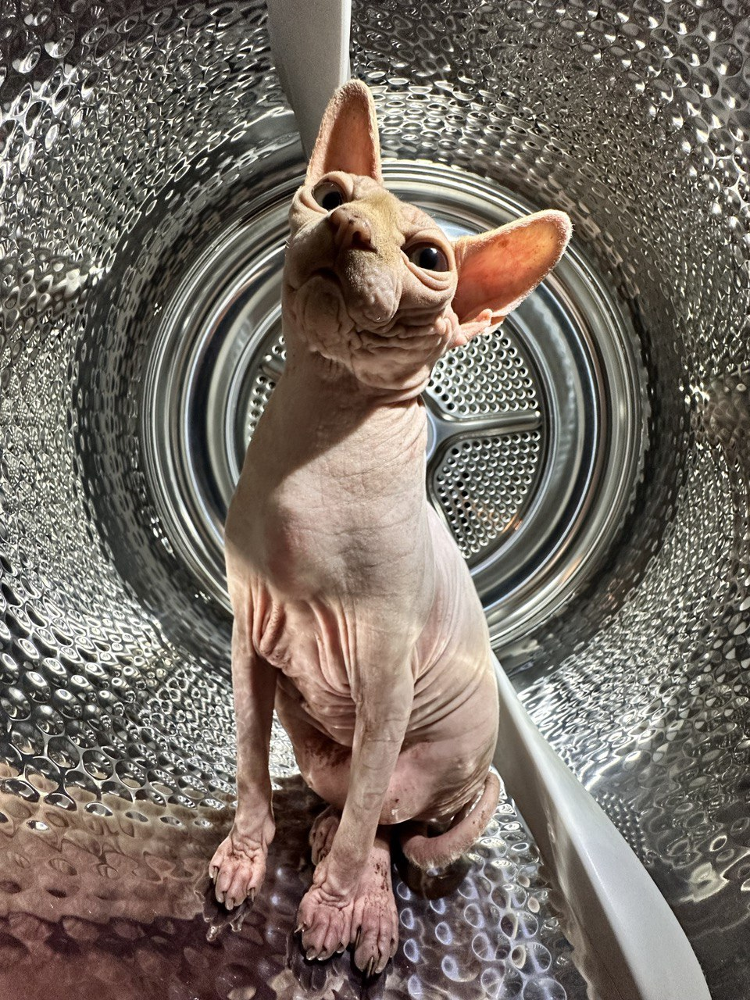

Meet Mayson The Cat
Mayson, our beloved Sphynx cat, brings both delight and laughter into our lives. With his unique hairless appearance and gentle demeanor, he has become an integral part of our family.
Mayson's favorite pastime is sleeping. He can be found curled up in the coziest spots around the house, peacefully dozing off for hours on end. His love for relaxation knows no bounds, and he has truly mastered the art of laziness.
Despite his laid-back nature, Mayson possesses a mischievous side. As soon as the night falls, he becomes an expert at waking us up with a gentle paw and a persistent meow. Although it can be slightly disruptive, we can't help but smile at his determination to seek attention during the night.
Mayson has a peculiar liking for licking glass surfaces. Whether it's a window or a glass table, he will spend hours delicately licking it with great enthusiasm. It's one of his adorable quirks that never fails to amuse us.
Despite his appetite for licking, Mayson has a unique dietary history. On one occasion, he managed to devour an entire pigeon, leaving us astonished by his impressive hunting skills. Yet, even after such a feast, his hunger seemed insatiable, reminding us of his exceptional appetite.
It's worth mentioning that Mayson has his own passport, allowing him to embark on adventures around the world. This passport serves as a testament to his curious nature and the potential for exciting travels in the future.
Mayson's kind and loving nature are truly heartwarming. He showers us with affectionate head nudges, purrs, and gentle cuddles. His presence brings comfort and a sense of warmth to our home, making it a true haven.
We feel incredibly grateful to have Mayson as a cherished member of our family. His unique personality, from his lazy habits to his glass-licking fascination and insatiable appetite, keeps us entertained and reminds us to appreciate the little moments of joy that he brings into our lives.